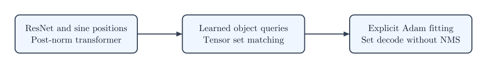
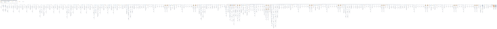
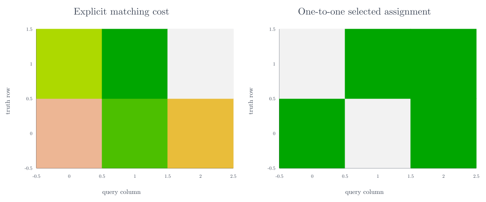
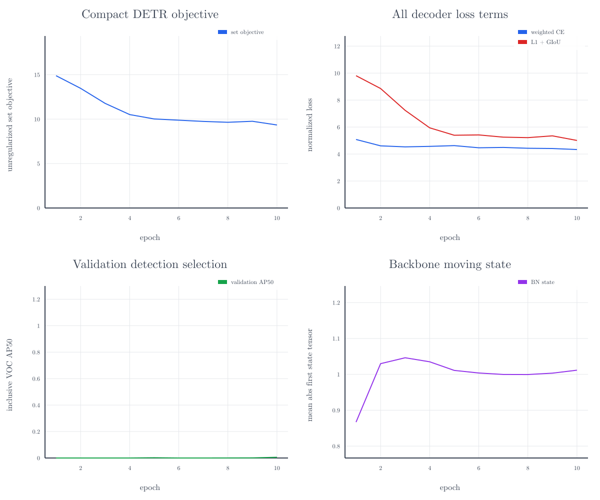
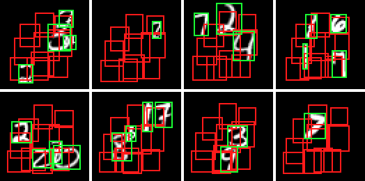

DETR tensor bipartite matching and learned object queries
Abstract
Check tensor Hungarian assignment against exhaustive solutions, set-loss derivatives and the full transformer graph, then explicitly fit the complete compact source DETR with independent auxiliary matching, paired BN checkpoints and real digit scenes.
Source example: examples/cpp/source/nn/1_convolutional_neural_networks/1.6_object_detection/detr.cpp.
The method
DETR predicts a fixed set of learned object queries and trains through a bipartite set objective. Tensor geometry and a rectangular primal/dual assignment solver produce detached targets, while every backbone, transformer and shared-head parameter participates in visible Adam fitting.
The concept diagram below is drawn by dm::graphics::Diagram. Its editable C++
source is the complete block below; regeneration uses the same datamunge toolchain
as the numerical examples. Exports consume the saved local SVG.
#include <dm/dm.hpp>
int main() {
std::filesystem::create_directories("build");
dm::graphics::Diagram diagram;
diagram.node("n0", {0.0, 0}, "ResNet and sine positions\nPost-norm transformer");
diagram.node("n1", {5.2, 0}, "Learned object queries\nTensor set matching");
diagram.node("n2", {10.4, 0}, "Explicit Adam fitting\nSet decode without NMS");
diagram.edge("n0", "n1").edge("n1", "n2");
diagram.save_svg("build/detr_concept.svg");
}
Executed tensor architecture
All displayed prediction branches are joined only to keep them reachable in one diagram; the flattened display output is not postprocessed detection or pose inference.
This figure executes the inference configuration shown in the code, using a zero-valued shape probe without fitting or loading a checkpoint. Named stage boundaries group whole subgraphs where available; other nodes retain functional-layer detail. Exact batch-inclusive shapes and reachable parameter totals come from the trace. Shared linear scales map spatial dimensions and channel counts to blocks; the one-pixel visibility floor is disclosed in the legend. Labels use compact monospace text, rotate counterclockwise and sit beside their own glyphs. Arrows flow left to right; wide diagrams scroll at native size on the website.
#include <dm/dm.hpp>
int main() {
namespace n = dm::nn;
namespace m = n::models;
n::set_num_threads(2);
std::filesystem::create_directories("build");
m::DetectionSceneConfig cfg;
m::DetrConfig model;
n::ParameterStore p(17), state(17);
cfg.scenes = 80;
cfg.seed = 11;
model.classes = 10;
model.image_size = 64;
model.backbone_depth = 18;
model.width_divisor = 8;
model.dimension = 64;
model.heads = 4;
model.feedforward = 128;
model.encoder_layers = 2;
model.decoder_layers = 2;
model.queries = 10;
model.dropout = 0;
model.grayscale = true;
model.small_stem = true;
n::Module architecture_model(
[&](const n::Tensor& image) {
const auto out = m::Detr(p, state, image, model, false);
return n::concat(
{out.logits.back().reshape({1, -1}), out.boxes.back().reshape({1, -1})}, 1);
},
"DETR tensor bipartite matching and learned object queries");
n::ModelPlotOptions options;
options.style = n::ModelPlotStyle::Flow;
options.detail = n::ModelPlotDetail::Blocks;
options.labels = {.type = n::ModelPlotLabel::NameAndShape, .size = 12, .wrap = 24};
options.spacing = {.layer = 24, .lane = 12, .label = 8, .margin = 20};
options.sizing.spatial_size = 96;
options.sizing.channel_size = 42;
options.sizing.minimum_extent = 1;
options.opacity = .8;
const auto diagram = architecture_model.plot(n::zeros({1, 64, 64, 1}), options);
diagram.save_svg("build/detr_architecture.svg");
std::print(
"{} displayed nodes; {} reachable learned values.\n",
diagram.nodes().size(),
diagram.parameter_count());
}387 displayed nodes; 357399 reachable learned values.

Rectangular assignment with tensor potentials
DETR assigns each truth to a different learned query. Its detached cost is
-class probability +5*L1 -2*GIoU, using normalized cy/cx/height/width boxes.
There must be at least as many queries as objects. The rectangular Hungarian
solver uses Float64 tensors for reduced costs, potentials, distances and
minima; host arrays hold only discrete augmenting-path ownership and visited
indices. Strict improvements/first minima give deterministic ties. No
numerical host solver or optimizer is hidden in this assignment.
The following compares100 small random rectangular problems to exhaustive one-to-one enumeration, including negative costs, and plots an explicit cost matrix and its selected assignment. Empty truth requires no assignment.
#include <dm/dm.hpp>
int main() {
namespace n = dm::nn;
std::mt19937 generator(17);
std::uniform_real_distribution<double> draw(-10, 10);
double error = 0;
for (int trial = 0; trial < 100; ++trial) {
const int R = 1 + trial % 4, C = R + trial % 3;
std::vector<double> cost(R * C);
for (auto &v : cost)
v = draw(generator);
const auto chosen =
n::models::TensorHungarianAssignment(n::from_vector(cost, {R, C})).to_vector<int>();
std::vector<bool> used(C);
double actual = 0;
for (int r = 0; r < R; ++r) {
if (chosen[r] < 0 || chosen[r] >= C || used[chosen[r]])
return 1;
used[chosen[r]] = true;
actual += cost[r * C + chosen[r]];
}
std::fill(used.begin(), used.end(), false);
double best = INFINITY;
std::function<void(int, double)> enumerate = [&](int r, double sum) {
if (r == R) {
best = std::min(best, sum);
return;
}
for (int c = 0; c < C; ++c)
if (!used[c]) {
used[c] = true;
enumerate(r + 1, sum + cost[r * C + c]);
used[c] = false;
}
};
enumerate(0, 0);
error = std::max(error, std::abs(actual - best));
}
if (error > 1e-10)
return 1;
const auto cost = n::from_vector(std::vector<double>{4, 1, 3, 2, 0, 5}, {2, 3}),
chosen = n::models::TensorHungarianAssignment(cost),
mask = n::one_hot(chosen, 3, 1, 0, n::DType::Float64);
auto a = n::plot_tensor_map(n::reverse(cost, {0}), 0, 5);
a.title("Explicit matching cost")
.x_label("query column")
.y_label("truth row")
.x_limits(-.5, 2.5)
.y_limits(-.5, 1.5);
auto b = n::plot_tensor_map(n::reverse(mask, {0}), 0, 1);
b.title("One-to-one selected assignment")
.x_label("query column")
.y_label("truth row")
.x_limits(-.5, 2.5)
.y_limits(-.5, 1.5);
std::filesystem::create_directories("build");
dm::graphics::RLayout::create(1, 2).add(a).add(b).size(1200, 500).fit_panels().save_svg(
"build/detr_assignment.svg");
std::print("100 rectangular Hungarian solutions match exhaustive minima; max error{:.12f}. "
"Fixture columns[{},{}], total cost{:.6f}. This is detached matching, not fitted "
"model output.\n",
error, chosen.at({0}), chosen.at({1}), n::sum(cost * mask).item());
}100 rectangular Hungarian solutions match exhaustive minima; max error0.000000000000. Fixture columns[1,0], total cost3.000000. This is detached matching, not fitted model output.

Set objective, no-object weighting and disjoint-box gradients
No-object is the final class. Matched queries have classification weight1,
unmatched queries .1; weighted CE divides by total class weights. Matched
5*L1+2*(1-GIoU) divides by total objects floored at one. Empty images retain
background classification and zero box gradients. GIoU can be negative for
disjoint boxes and uses1e-7 denominator floors.
Every decoder layer is independently matched and supervised in this source port. The visible fitting loop below shows that sum explicitly. Matching uses Float64 costs; source host Float32 corner rounding may differ near exact ties. The independent fixture checks analytic class derivatives and disjoint-box central differences, including masked unmatched boxes.
#include <dm/dm.hpp>
int main() {
namespace n = dm::nn;
const auto type = n::DType::Float64;
const auto x = n::zeros({1, 2, 3}, type).requires_grad_(),
b = n::from_vector(std::vector<double>{.25, .3, .2, .2, .2, .3, .4, .5},
{1, 2, 4})
.requires_grad_();
n::models::DetrTargets t{
n::from_vector(std::vector<double>{1, 0, 0, 0, 0, 1}, {1, 2, 3}),
n::from_vector(std::vector<double>{.7, .65, .25, .3, 0, 0, 0, 0}, {1, 2, 4}),
n::from_vector(std::vector<double>{1, 0}, {1, 2})};
const auto loss = n::models::DetrLayerLoss(x, b, t);
const auto g = n::grad(loss, {x, b});
double error = 0;
for (int q = 0; q < 2; ++q)
for (int c = 0; c < 3; ++c)
error = std::max(error, std::abs(g[0].at({0, q, c}) -
(1. / 3. - ((q == 0 && c == 0) || (q == 1 && c == 2))) *
(q ? .1 : 1.) / 1.1));
for (int k = 0; k < 8; ++k) {
auto plus = b.to_vector<double>(), minus = plus;
const double step = 1e-6;
plus[k] += step;
minus[k] -= step;
const double expected =
(n::models::DetrLayerLoss(x, n::from_vector(plus, {1, 2, 4}), t).item() -
n::models::DetrLayerLoss(x, n::from_vector(minus, {1, 2, 4}), t).item()) /
(2 * step);
error = std::max(error, std::abs(g[1].reshape({8}).at({k}) - expected));
}
if (error > 1e-8)
return 1;
t.labels = n::one_hot(n::full({1, 2}, 2., n::DType::Int64), 3, 1, 0, type);
t.positive = n::zeros({1, 2}, type);
t.boxes = n::zeros({1, 2, 4}, type);
const auto empty = n::models::DetrLayerLoss(x, b, t);
if (std::abs(empty.item() - std::log(3.)) > 1e-12 ||
n::count_nonzero(n::grad(empty, {b})[0]).item() != 0)
return 1;
std::print(
"Disjoint-box set loss{:.12f}; all class analytic/box finite-difference derivatives "
"pass, max error{:.12f}. Empty-target CE{:.12f} and exact zero box gradients.\n",
loss.item(), error, empty.item());
}Disjoint-box set loss9.280711054100; all class analytic/box finite-difference derivatives pass, max error0.000000000852. Empty-target CE1.098612288668 and exact zero box gradients.
Post-norm transformer graph and compact initialization
The backbone emits feature-only ResNet activations. Source2D sine/cosine positions are tensor-evaluated in Double then cast to model dtype: row encoding first, column encoding second. Positions affect Q/K only, while values remain contents. Decoder contents start at zero and learned query positions enter every layer's Q/K. Encoder/decoder blocks use original post-norm residual ordering. Class and three-layer sigmoid box heads share across decoder layers.
The full source ResNet50,6/6-layer,D256,8-head,FF2048,100-query,80-class model has41,575,061 learned and53,120 BN-state scalars across424 learned tensors. This full128-pixel backward checks their connections, with expected zero initial derivatives from zero-content self-attention and invariant key biases. Backbone BN is trainable/moving, rather than pretrained frozen BN. Training dropout uses the parameter-store RNG; the compact demonstration disables it.
#include <dm/dm.hpp>
int main() {
namespace n = dm::nn;
n::set_num_threads(2);
n::ParameterStore p(17), state(17);
n::models::DetrConfig c;
c.image_size = 128;
c.update_stats = false;
const auto net = n::models::Detr(
p, state, n::sin(.13 * n::arange(0, 128 * 128 * 3)).reshape({1, 128, 128, 3}), c, true);
n::Tensor objective = n::zeros({});
for (std::size_t k = 0; k < net.logits.size(); ++k)
objective =
objective + n::mean(n::square(net.logits[k])) + n::mean(n::square(net.boxes[k]));
const auto g = n::grad(objective, p.parameters());
if (p.count() != 41575061 || state.count() != 53120 || g.size() != 424 ||
net.logits.size() != 6)
return 1;
int nonzero = 0;
for (const auto &v : g) {
if (!v.defined() || !std::isfinite(n::sum(n::square(v)).item()))
return 1;
if (n::sum(n::square(v)).item() > 0)
++nonzero;
}
std::print(
"Full initialized DETR128: {} learned/{} state scalars,{} decoder outputs,{} defined "
"finite tensor gradients ({} nonzero). Initial zero-content/invariant-bias derivatives "
"are expected. No pretraining or benchmark fitting.\n",
p.count(), state.count(), net.logits.size(), g.size(), nonzero);
}Full initialized DETR128: 41575061 learned/53120 state scalars,6 decoder outputs,424 defined finite tensor gradients (417 nonzero). Initial zero-content/invariant-bias derivatives are expected. No pretraining or benchmark fitting.
The compact source configuration uses ResNet18/8, a small stem with8x8 memory at64 pixels,D64,four heads,FF128,two encoder/two decoder layers andten queries/classes. It has357,399 learned and1,200 state scalars. At initialization, 150 of157 tensor gradients are nonzero; zero-content first self-attention and key-bias invariance explain the others. The parameter and moving-state stores are warmed before optimizer construction.
The split uses64 fit/16 validation MNIST-derived training scenes(first2048 digits,seed11) and eight test scenes(first512 official test digits,seed22). Actual input scenes and boxes appear below.
#include <dm/dm.hpp>
int main() {
namespace n = dm::nn;
n::set_num_threads(2);
std::filesystem::path cache;
if (const auto *p = std::getenv("DATAMUNGE_DATA_DIR"))
cache = p;
else if (const auto *p = std::getenv("XDG_CACHE_HOME"))
cache = std::filesystem::path(p) / "datamunge/datasets";
else
cache = std::filesystem::path(std::getenv("HOME")) / ".cache/datamunge/datasets";
dm::datasets::fetch("mnist", (cache / "mnist").string());
const auto train = n::load_mnist((cache / "mnist").string(), "train");
n::models::DetectionSceneConfig cfg;
cfg.scenes = 80;
cfg.seed = 11;
const auto scenes = n::models::MakeTensorDetectionScenes(
n::slice_axis(train.images, 0, 0, 2048), n::slice_axis(train.labels, 0, 0, 2048), cfg);
std::vector<n::Tensor> boxes(scenes.boxes.begin(), scenes.boxes.begin() + 8);
const auto preview = n::models::DrawDetectionBoxes(n::slice_axis(scenes.images, 0, 0, 8),
boxes, {.1, 1., .2});
std::filesystem::create_directories("build");
n::save_image_grid(preview, "build/detr_scenes.png", 4, 0., 1., 4, 1., 2);
std::int64_t objects = 0;
for (const auto &b : scenes.boxes)
objects += b.shape()[0];
std::print("80 generated training/validation scenes; {} accepted digits. Preview: first "
"eight training scenes with tight green boxes.\n",
objects);
}80 generated training/validation scenes; 195 accepted digits. Preview: first eight training scenes with tight green boxes.

The visible loop explicitly matches every decoder layer and sums its set
objective before Adam(.001),batch four,10 epochs,160 updates (kept short for
build time). It adds
.00005*sum(kernel²) and fits all learned backbone/transformer/query/head leaves;
biases and normalization affines are optimized but excluded from kernel L2.
Strict validation AP50 improvement saves learned weights and BN state together.
Restoration recomputes selected validation AP before final test evaluation.
Inference uses the last decoder layer, one best foreground class per query, with softmax denominator including no-object and inclusive score >=.01. Following the source, a foreground score can survive even if no-object is the overall winner. Ties choose the first foreground class. Boxes decode/clip to pixels; there are no anchors, box NMS or additional100 cap. Query count bounds output.
#include <dm/dm.hpp>
int main() {
namespace n = dm::nn;
namespace m = n::models;
n::set_num_threads(2);
std::filesystem::path cache;
if (const auto *p = std::getenv("DATAMUNGE_DATA_DIR"))
cache = p;
else if (const auto *p = std::getenv("XDG_CACHE_HOME"))
cache = std::filesystem::path(p) / "datamunge/datasets";
else
cache = std::filesystem::path(std::getenv("HOME")) / ".cache/datamunge/datasets";
dm::datasets::fetch("mnist", (cache / "mnist").string());
const auto digits = n::load_mnist((cache / "mnist").string(), "train");
m::DetectionSceneConfig cfg;
cfg.scenes = 80;
cfg.seed = 11;
const auto scenes = m::MakeTensorDetectionScenes(
n::slice_axis(digits.images, 0, 0, 2048), n::slice_axis(digits.labels, 0, 0, 2048), cfg);
m::DetrConfig model;
model.classes = 10;
model.image_size = 64;
model.backbone_depth = 18;
model.width_divisor = 8;
model.dimension = 64;
model.heads = 4;
model.feedforward = 128;
model.encoder_layers = 2;
model.decoder_layers = 2;
model.queries = 10;
model.dropout = 0;
model.grayscale = true;
model.small_stem = true;
std::vector<std::int64_t> val_rows(16);
std::iota(val_rows.begin(), val_rows.end(), 64);
std::vector<int> val_ids(val_rows.begin(), val_rows.end());
n::ParameterStore p(17), state(17);
{
n::NoGradGuard guard;
const auto warm = m::Detr(p, state, n::zeros({1, 64, 64, 1}), model, false);
if (warm.logits.back().shape() != n::Shape{1, 10, 11})
return 1;
}
if (p.count() != 357399 || state.count() != 1200)
return 1;
// Inference borrows this scope's learned/BN stores; every class and default is handled by tensor kernels.
const auto detect = [&](const m::TensorDetectionScenes &data,
const std::vector<std::int64_t> &rows) {
n::NoGradGuard guard;
const auto net = m::Detr(p, state, 2. * n::gather(data.images, n::from_vector(rows)) - 1.,
model, false);
return m::DecodeDetrDetections(net.logits.back(), net.boxes.back(), n::from_vector(rows),
64, 64);
};
// Annotation conversion is presentation of existing tensor boxes/IDs, with no box arithmetic.
const auto truth_records = [](const m::TensorDetectionScenes &data,
const std::vector<std::int64_t> &rows) {
std::vector<m::DetectionEvaluationTruth> out;
for (auto row : rows) {
const auto boxes = n::boxes_to_vector(data.boxes[row]);
const auto labels = data.labels[row].to_vector<int>();
for (std::size_t i = 0; i < boxes.size(); ++i)
out.push_back({int(row), labels[i], boxes[i]});
}
return out;
};
const auto validation_truth = truth_records(scenes, val_rows);
n::OptimizerConfig adam_config;
adam_config.kind = n::OptimizerKind::Adam;
n::Optimizer adam(p, .001, adam_config);
n::BatchOrder batches(64, 4, 29);
std::vector<n::Tensor> kernels;
for (const auto &leaf : p.parameters())
if (leaf.dim() >= 2)
kernels.push_back(leaf);
std::filesystem::create_directories("build");
const std::string checkpoint = "build/detr_best.npz";
std::vector<double> epochs, losses, ce_trace, reg_trace, ap_trace, scale_trace;
double best = -1;
int selected = 0, steps = 0;
std::print("| epoch | set objective loss | CE | regression | val AP50 "
"|\n|---:|---:|---:|---:|---:|\n");
for (int epoch = 1; epoch <= 10; ++epoch) {
batches.begin_epoch();
double total = 0, total_ce = 0, total_reg = 0;
std::size_t seen = 0;
for (auto rows = batches.next(); !rows.empty(); rows = batches.next()) {
const auto net = m::Detr(
p, state, 2. * n::gather(scenes.images, n::from_vector(rows)) - 1., model, true);
// Each decoder layer gets its own detached tensor assignment and differentiable set loss.
n::Tensor objective = n::zeros({}), focal = n::zeros({});
for (std::size_t layer = 0; layer < net.logits.size(); ++layer) {
const auto targets =
m::MatchDetrTargets(net.logits[layer], net.boxes[layer], scenes, rows, 10);
objective = objective + m::DetrLayerLoss(net.logits[layer], net.boxes[layer], targets);
const auto weights = targets.positive * .9 + .1;
focal = focal +
n::sum(-n::sum(targets.labels * n::log_softmax(net.logits[layer], -1), {2}) *
weights) /
n::maximum(n::sum(weights), n::full({}, 1e-7));
}
n::Tensor penalty = n::zeros({});
for (const auto &kernel : kernels)
penalty = penalty + n::sum(n::square(kernel));
if (!std::isfinite(objective.item()))
return 1;
total += objective.item() * rows.size();
total_ce += focal.item() * rows.size();
total_reg += (objective - focal).item() * rows.size();
seen += rows.size();
adam.minimize(objective + .00005 * penalty);
++steps;
}
const auto metric =
m::EvaluateDetectionDataset(m::DetectionEvaluationRecords(detect(scenes, val_rows)),
validation_truth, val_ids, false, true);
epochs.push_back(epoch);
losses.push_back(total / double(seen));
ce_trace.push_back(total_ce / double(seen));
reg_trace.push_back(total_reg / double(seen));
ap_trace.push_back(metric.ap50.item());
scale_trace.push_back(n::mean(n::abs(state.at(state.names()[0]))).item());
if (metric.ap50.item() > best) {
best = metric.ap50.item();
selected = epoch;
p.save(checkpoint);
state.save("build/detr_best_state.npz");
}
std::print("| {} | {:.6f} | {:.6f} | {:.6f} | {:.6f} |\n", epoch, losses.back(),
ce_trace.back(), reg_trace.back(), ap_trace.back());
}
p.load(checkpoint);
state.load("build/detr_best_state.npz");
const auto restored =
m::EvaluateDetectionDataset(m::DetectionEvaluationRecords(detect(scenes, val_rows)),
validation_truth, val_ids, false, true);
if (std::abs(restored.ap50.item() - best) > 1e-12)
return 1;
const auto test_digits = n::load_mnist((cache / "mnist").string(), "test");
cfg.scenes = 8;
cfg.seed = 22;
const auto test =
m::MakeTensorDetectionScenes(n::slice_axis(test_digits.images, 0, 0, 512),
n::slice_axis(test_digits.labels, 0, 0, 512), cfg);
std::vector<std::int64_t> test_rows(8);
std::iota(test_rows.begin(), test_rows.end(), 0);
std::vector<int> test_ids(test_rows.begin(), test_rows.end());
const auto output = detect(test, test_rows);
const auto records = m::DetectionEvaluationRecords(output);
const auto truth = truth_records(test, test_rows);
const auto voc = m::EvaluateDetectionDataset(records, truth, test_ids, false, true),
coco = m::EvaluateDetectionDataset(records, truth, test_ids, true);
// Preserve the exact evaluated boxes and scores for an independent AP recount.
std::vector<double> saved_predictions, saved_truth;
for(const auto& detection:records){saved_predictions.insert(saved_predictions.end(),{double(detection.image),double(detection.label),double(detection.score),double(detection.box[0]),double(detection.box[1]),double(detection.box[2]),double(detection.box[3])});}
for(const auto& target:truth){saved_truth.insert(saved_truth.end(),{double(target.image),double(target.label),double(target.box[0]),double(target.box[1]),double(target.box[2]),double(target.box[3]),double(target.difficult),double(target.crowd)});}
n::save_npz("build/detr_detections_"+std::string("0")+".npz",{{"predictions",n::from_vector(saved_predictions,{std::int64_t(records.size()),7})},{"truth",n::from_vector(saved_truth,{std::int64_t(truth.size()),8})},{"images",n::from_vector(test_ids)},{"metrics",n::stack({voc.ap50,coco.ap75,coco.ap},0)}});
std::vector<n::Tensor> predicted;
const auto image_ids = output.images.to_vector<int>();
for (int image = 0; image < 8; ++image) {
std::vector<std::int64_t> index;
for (std::size_t j = 0; j < image_ids.size(); ++j)
if (image_ids[j] == image)
index.push_back(std::int64_t(j));
predicted.push_back(n::gather(output.boxes, n::from_vector(index)));
}
const auto green = m::DrawDetectionBoxes(test.images, test.boxes, {.1, 1., .2}),
red = m::DrawDetectionBoxes(test.images, predicted, {1., .1, .1}),
raw = test.images * n::ones({1, 1, 1, 3});
n::save_image_grid(n::where(n::any(n::not_equal(green, raw), {3}, true), green, red),
"build/detr_detections.png", 4, 0., 1., 4, 1., 2);
std::filesystem::create_directories("figures");
std::filesystem::copy_file("build/detr_detections.png", "figures/detr_detections.png",
std::filesystem::copy_options::overwrite_existing);
auto a = dm::graphics::RPlot::create();
a.lines(epochs, losses, "set objective", {37, 99, 235})
.title("Compact DETR objective")
.x_label("epoch")
.y_label("unregularized set objective")
.y_limits(0, 1.3 * *std::max_element(losses.begin(), losses.end()));
auto b = dm::graphics::RPlot::create();
b.lines(epochs, ce_trace, "weighted CE", {37, 99, 235})
.lines(epochs, reg_trace, "L1 + GIoU", {220, 38, 38})
.title("All decoder loss terms")
.x_label("epoch")
.y_label("normalized loss")
.y_limits(0, 1.3 * std::max(*std::max_element(ce_trace.begin(), ce_trace.end()),
*std::max_element(reg_trace.begin(), reg_trace.end())));
auto c = dm::graphics::RPlot::create();
c.lines(epochs, ap_trace, "validation AP50", {22, 163, 74})
.title("Validation detection selection")
.x_label("epoch")
.y_label("inclusive VOC AP50")
.y_limits(0, 1.3);
auto d = dm::graphics::RPlot::create();
d.lines(epochs, scale_trace, "BN state", {147, 51, 234})
.title("Backbone moving state")
.x_label("epoch")
.y_label("mean abs first state tensor")
.y_limits(*std::min_element(scale_trace.begin(), scale_trace.end()) - .1,
*std::max_element(scale_trace.begin(), scale_trace.end()) + .2);
dm::graphics::RLayout::create(2, 2)
.add(a)
.add(b)
.add(c)
.add(d)
.size(1200, 1000)
.fit_panels()
.save_svg("build/detr_training.svg");
std::print(
"{} learned scalars, {} Adam updates; selected epoch {}, validation AP50 {:.6f}. Test: "
"{} digits in eight scenes, inclusive VOC AP50 {:.6f}, COCO AP75 {:.6f}, AP50:95 "
"{:.6f}, {} detections. Selected mean absolute first BN state {:.6f}; paired learned "
"and BN state restored.\n",
p.count(), steps, selected, best, truth.size(), voc.ap50.item(), coco.ap75.item(),
coco.ap.item(), records.size(), n::mean(n::abs(state.at(state.names()[0]))).item());
}| epoch | set objective loss | CE | regression | val AP50 |
|---|---|---|---|---|
| 1 | 14.887142 | 5.078838 | 9.808304 | 0.000000 |
| 2 | 13.464304 | 4.607476 | 8.856828 | 0.000000 |
| 3 | 11.771038 | 4.532133 | 7.238905 | 0.000000 |
| 4 | 10.511493 | 4.568321 | 5.943172 | 0.000000 |
| 5 | 10.018858 | 4.625254 | 5.393604 | 0.001984 |
| 6 | 9.881060 | 4.464004 | 5.417056 | 0.000000 |
| 7 | 9.742370 | 4.489920 | 5.252450 | 0.000000 |
| 8 | 9.644551 | 4.428274 | 5.216277 | 0.000352 |
| 9 | 9.758670 | 4.409724 | 5.348946 | 0.000926 |
| 10 | 9.340604 | 4.333721 | 5.006883 | 0.005556 |
357399 learned scalars, 160 Adam updates; selected epoch 10, validation AP50 0.005556. Test: 23 digits in eight scenes, inclusive VOC AP50 0.000000, COCO AP75 0.000000, AP50:95 0.000000, 80 detections. Selected mean absolute first BN state 1.011570; paired learned and BN state restored.


Regenerate adjacent views from this run
#include <dm/dm.hpp>
int main(){std::filesystem::copy_file("build/detr_detections.png","build/export_detr_detections.png",std::filesystem::copy_options::overwrite_existing);}Conclusion
The executed results above describe the current selected checkpoint and its held-out detection quality. Small scene sets and bounded schedules do not establish architecture rankings. Inspect localization, missed targets and false positives together with validation selection and the actual prediction gallery.
Assignment and objective oracles precede full graph validation and compact whole-model fitting. The report saves actual selected held-out query predictions and documents the measured instructional result, without implying pretrained or full-dataset accuracy.
References
- [Carion et al. (2020), End-to-End Object Detection with Transformers](https://arxiv.org/abs/2005.12872).
- [Authors’ DETR implementation](https://github.com/facebookresearch/detr).